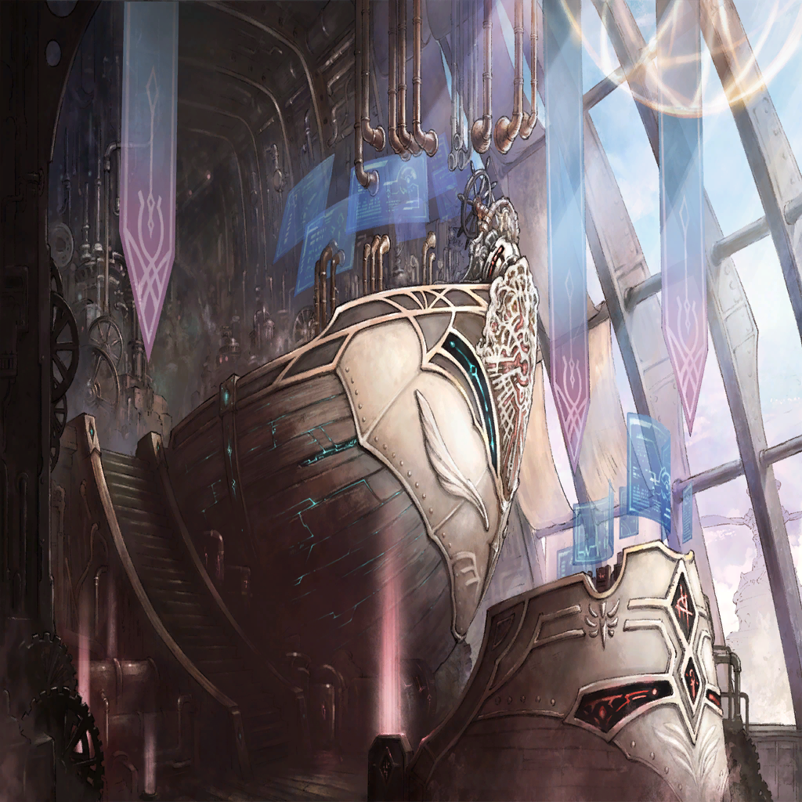

|
 |

ニムル |
ぐっ、このままだと…
地面まで真っ逆さまか…！ |
ニムル |
（なら、嫉妬罪域
＜インディヴィア・ベルト＞の時のように、
空中に氷の足場を――！） |
ニムル |
“我は色欲の扉を越えし者――！” |
ニムル |
よし、これな、ら―― |
ニムル |
な――!? |
| メサルティム |
おっと、勢い余って砕いてしまった
すまないな、無駄な手間を |
ニムル |
お、前は！ |
| メサルティム |
さて――続きといこうか |
ニムル |
何――をッ!? |
ニムル |
ごッ、ぁ… |
ニムル |
お前…わかって、いるのか！
落下しているんだぞ!? お前も！ |
| メサルティム |
――それが何か？ |
ニムル |
（この女、狂ってるのか…!?） |
| メサルティム |
空から落ちるのは初めてではない
…まあ、死ぬほど痛くはあったが |
ニムル |
つき合って、られるか…！ |
ニムル |
“我は色欲の扉を――” |
| メサルティム |
土産だ。持っていけ |
ニムル |
な――!?
盾を、投げるだと…!? |
| メサルティム |
盾だからといって、
投げて使えぬわけではないからな |
ニムル |
ぐご…っ |
ニムル |
（くそ、身体の、自由が…
俺は――こんな、ところで…） |
ニムル |
………… |
| メサルティム |
…常人であれば、これで死ぬが。さて |
| メサルティム |
………… |
| メサルティム |
まあ、止めはしっかりと刺しておくか |
ニムル |
――――… |
 |
|
ニムル |
ぁ――わ、ぎ… |

ワギナオ |
――まったく
再会する度にピンチだな、お前は |
ワギナオ |
…ここだ、アドレイ
見えているな？ |
|  |

アドレイ |
あったり前だ！
そのまま体勢変えるなよ!?
今、掴まえる…！ |
アドレイ |
行けるか、オッサン！ |
|

ク・イエナ |
オッサンではないが、了解した
カウントを頼む |
|
アドレイ |
いいか？ 3…！ |
|
アドレイ |
2！ |
|
アドレイ |
1――今だ…!! |
ク・イエナ |
――ッ！ |
ク・イエナ |
く…っ！ |
アドレイ |
どうだ…!? |
ク・イエナ |
ああ…上手く、行った… |
アドレイ |
了解りょーかい！
そんじゃ、その辺に着陸するぜ |
ニムル |
―――― |
ク・イエナ |
ニムルの様子は…!? |
ワギナオ |
大丈夫、命に別状はない
…罪獣の核は、手放したようだが |
ク・イエナ |
そうか… |
ク・イエナ |
しかし、ワギナオ
貴方は今までどこに…それにその姿は |
ワギナオ |
…話せば長くなる
今は、皆との合流を優先しよう |
ク・イエナ |
そう、だな… |
ク・イエナ |
（なんというか、老けたな…？） |
ワギナオ |
？ 俺の顔に何か？ |
ク・イエナ |
…いや、なんでも―― |
ク・イエナ |
な――!? |
ワギナオ |
…諦めては、くれないか |
|
アドレイ |
うわわ！ なんだよいきなり!?
上空からの、飛来物…!?
でも、何が―― |
| 飛空艇アナウンス |
警告――右翼エンジン破損
高度維持困難。高度維持困難―― |
アドレイ |
…っ、聞こえるか!?
不時着する！ しっかり掴まってろ…！ |
アドレイ |
んなろ…ッ！ |
 |

シャヘル |
世界を喰らう蛇同士の、戦いの光が |
| アンデクス |
なんだと――？ |
| アンデクス |
…なあ、シャヘルさんよ |
シャヘル |
なんだね？ |
| アンデクス |
俺の目には、さ
飛空艇がここに墜ちて来てるように
見えるんだけど |
シャヘル |
…んん？ |

ダフネ |
…っ、皆さん！ 私の後ろに…!! |

ニクス |
うわ…っ!? |

メラ |
きゃあっ!? |
ダフネ |
メラさん！ ニクスさん！ |
| アンデクス |
…構えを解くな、ダフネ！ |
ダフネ |
でも、おふたりが…！ |
| アンデクス |
…今は、目の前に集中しろ
あの砂煙の向こう…見えるか？ |
ダフネ |
見えるって、何がです――か |
| アンデクス |
――ッ |
ダフネ |
これ、は―― |
| メサルティム |
おっと、また砕いてしまった
本当に、この時代の物は脆くて困る |
| メサルティム |
戦場の只中か…悪くない |
| アンデクス |
――なんだ、アンタ |
ダフネ |
あの盾…そんな、だって、え？ |
| メサルティム |
ほう、私と同じ盾――
嫉妬の層に在る戦士か。これは僥倖 |
| メサルティム |
私はマティアほど陰湿ではないが…
未来への継承、どのように果たされたか
興味はある |
ダフネ |
――え？ |
| メサルティム |
はぁ…ッ!! |
ダフネ |
なんて…重い打撃…！ |
| メサルティム |
状況判断には難があるが、
盾の扱いに文句はない
今の一撃、よく凌いだ |
ダフネ |
え？ あ、ありがとうございます？ |
| メサルティム |
だが―― |
| メサルティム |
お前の技は、守りに寄り過ぎている
それでは、削り潰されるのを待つだけだ |
ダフネ |
…っ、いいえ！ |
| アンデクス |
それで問題ないのさ！
攻撃は、俺の担当だからな…！ |
| アンデクス |
な――!? |
| メサルティム |
なるほど |
| メサルティム |
…良い戦士だ |
| アンデクス |
…今の時代は、騎士って言うんだぜ
俺たちみたいなのは |
| メサルティム |
そうか。まあ、呼称なぞなんでもいいが |
| アンデクス |
………… |
| アンデクス |
（あの女…なんだ？
どうやら、言動から過去から来た奴らしい
それはいい。前例がある。だが――） |
| アンデクス |
（俺の剣を首に受けて、
傷ひとつないとはどういうことだ…？） |
| メサルティム |
良いぞ。お前たちは良い戦士だ
だから―― |
| メサルティム |
全力で相手をしてやろう
――来い |
| アンデクス |
言ってくれるじゃねえか
…行けるか、ダフネ |
ダフネ |
…はい、ひとりでは厳しいですけど
ふたりなら、きっと |
| アンデクス |
だな
…守りは任せるぜ |
ダフネ |
はいっ！ |